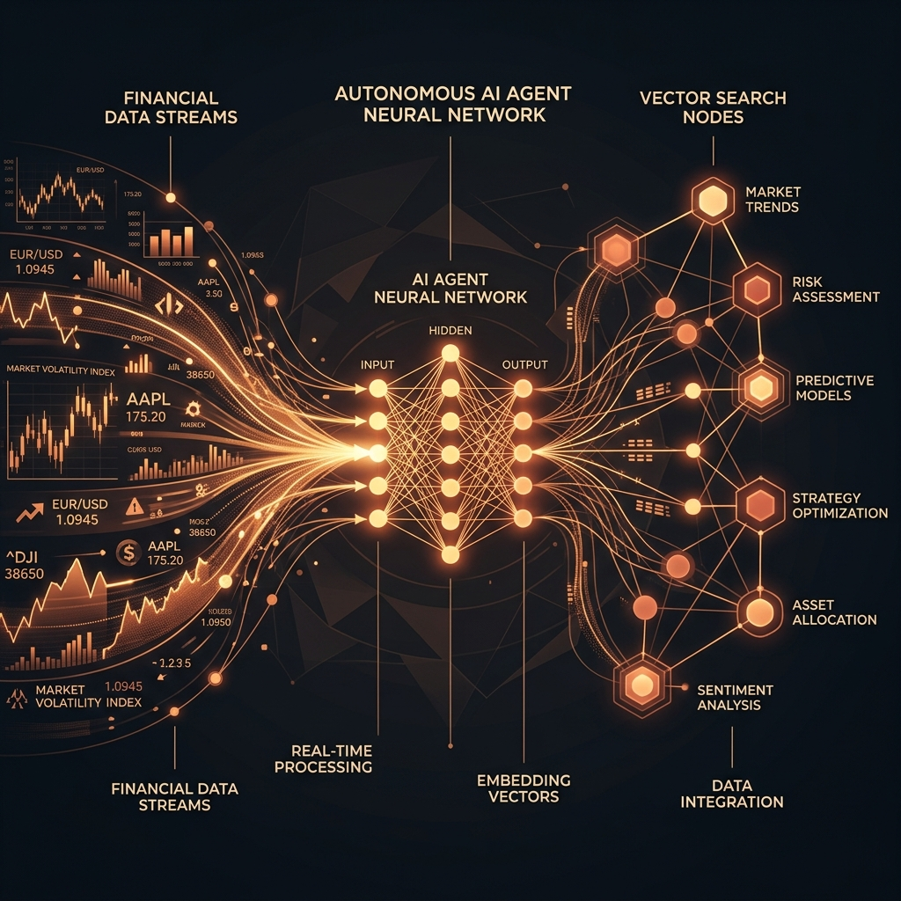

Distributed systems should
feel resilient.
Cloud architecture should
feel effortless.
Hey there, I'm Aksh Chauhan — a software engineer and M.S. Software Engineering graduate building full-stack, cloud-native, and distributed applications. Specializing in reliable backend systems, event-driven architectures, and AI-enabled workflows.
Tirelessly pursue architectural clarity.
Software is read 10x more than it is written. Decouple components, simplify state transitions, and make failure domains immediately intuitive.
Design for failure, build for resilience.
Networks partition, services crash, and latency spikes. Build with transactional outboxes, idempotency keys, and graceful compensation.
Software should empower quietly.
High-throughput infrastructure and generative AI shouldn't burden users with complexity — they should amplify human capability seamlessly.




Selected Works
Architectural blueprints, production systems, and AI workflows
AI-Powered Investor Intelligence
Autonomous financial research agent using Amazon Bedrock and Tool Calling with SEC EDGAR APIs. Engineered a hybrid RAG pipeline using pgvector and time-series metrics for real-time WebSocket market analysis.
SafeGuard Mobile SOS
Real-time emergency responder dispatch and matching engine. Built using Uber's H3 geospatial hexagonal indexing, WebSockets for bi-directional proximity tracking, and pipelined in-memory Redis caching.
Serverless Travel Booking Platform
Serverless hybrid Saga orchestrator on AWS Step Functions + DynamoDB + API Gateway. Eliminated distributed data drift and dual-write errors via the Transactional Outbox pattern, Idempotency keys, and SQS DLQs.
Hybrid Edge-Cloud Face Recognition
Elastic recognition pipeline on AWS EC2 + S3 + SQS with custom autoscaling up to 15 instances. IoT Greengrass + Lambda edge pipeline for local MTCNN detection, slashing cloud bandwidth consumption by 65% over MQTT.
Movie Recommendation Engine
Scalable recommendation engine with Java microservices hosted on Google Cloud Run. Asynchronous GCP Pub/Sub pipeline ingests 50k-record user interaction datasets into globally consistent Cloud Spanner instances.
Smart Code Editor & AI Mentor
AI-powered cloud IDE powered by Flask and Google GenAI SDK (Gemini). Secure multi-language execution (Python, Java, C++) via isolated Piston containers with real-time syntax highlighting and context-aware code mentor.
Netflix Modern Streaming Experience
High-performance streaming interface with dynamic media carousels and smooth responsive layouts. Built with React, React Query for server-state caching, and Firebase Auth for frictionless Google OAuth.
Car Rental Management System
Spring Boot CRUD microservices for live vehicle inventory with optimistic locking to eliminate double-booking. React interface with dynamic search filtering and streamlined reservation management for fleet admins.
What's His Deal?
Philosophy, engineering values, and personal background
For the past years, I've been turning complex architectural problems into reliable, performant, and scalable systems.
I'm a software engineer specialized in backend systems, distributed architectures, and AI-enabled workflows... but I'm also:
- ⚡ an AI-native builder: architecting agentic workflows, function calling & RAG
- ☁️ a cloud infrastructure enthusiast: fluent across AWS, GCP & Terraform
- 🧩 a distributed systems nerd: obsessed with consensus, sagas, and data consistency
- 🛠️ an open-source tinkerer: dissecting modern frameworks and runtime internals
- ☕ a caffeinated night owl: turning complex problems into elegant code
What fuels my soul
- Architecting clean, decoupled distributed systems
- Eliminating latency bottlenecks and race conditions
- Building generative AI tools that give engineers superpowers
- Writing code that performs flawlessly under peak loads
What I look for in teams
- Uncompromising engineering craft and high ownership
- Diverse team of curious, hungry, and humble engineers
- Fast iteration cycles paired with rigorous architecture
- Mission-driven problems with meaningful human impact
Stuff I'll nerd out on
- Mechanical keyboards (tactile switches & custom lubes)
- Formula 1 telemetry and race pace analytics
- Pour-over coffee extraction ratios (V60 & Chemex)
- Whiteboard architecture diagrams with colorful markers
The Engineering Workbench
Languages, infrastructure, databases, and architectural patterns